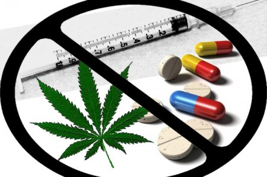

Drogas y Adicciones
Recuerda mientras las dogras te ofrecen su mundo, ellas te quitan el tuyo
Te hablaremos sobre las adicciones
¿Que son las adicciones?
Las Adicciones son una enfermedad crónica y recurrente del cerebro. Las Adicciones se basan en la búsqueda de alivio a través del consumo o uso de sustancias u otras conductas similares. El desarrollo de esta conducta implica para la persona adicta la incapacidad de controlarlo, dificultad para abstenerse, deseo del consumo, disminución del reconocimiento de los problemas derivados de la adicción y en las relaciones interpersonales, así como una respuesta emocional disfuncional. Esto crea problemas en la vida de la persona adicta, mermando su calidad de vida. Las Adicciones pueden derivar en problemas graves para la salud física y mental del paciente. Es importante detectarlas en un estado precoz para conseguir un diagnóstico y tratamiento efectivo. Por este motivo, es muy importante la colaboración de amigos y familiares, tanto en la detección, como en el tratamiento y seguimiento.
¿Como podemos evitar las Adicciones?
La prevención de adicciones es un esfuerzo multifacético que involucra a individuos, familias, escuelas y comunidades. Se centra en promover estilos de vida saludables, fortalecer habilidades personales, crear entornos seguros y proporcionar información precisa sobre los riesgos del consumo de sustancias. La prevención de adicciones es una inversión en el bienestar individual y colectivo. Al abordar los factores de riesgo y promover factores protectores, se puede reducir significativamente la incidencia de adicciones y sus consecuencias negativas. En resumen, la prevención de adicciones es un proceso continuo que requiere el compromiso de todos los sectores de la sociedad. La educación, el fortalecimiento familiar, la creación de entornos seguros y la promoción de estilos de vida saludables son estrategias clave para prevenir el consumo de drogas y alcohol y promover una sociedad más saludable. Existen múltiples métodos para tratar las distintas adicciones, en función de la situación individual de cada paciente. 
En que concisten las dogras...?
Para mi las drogas son una especie de arma de doble filo.. Por un lado, algunas tienen un poder enorme para curar, aliviar el dolor o tratar enfermedades. Pueden mejorar vidas de forma increible cuando se usan con responsabilidad... Pero por otro lado, las drogas tambien representan una huida facil para mucha gente: un escape de emociones, tristeza, de los problemas, de vacios personales. Y ese escape aveces se forma una prision, en la que la persona ya no tiene control de su cuerpo o su mente... Lo que comenzo con un "Rato de desconexion" se convierte en adiccion, dependencia, destruccion de relaciones, perdida de identidad. Las dogras se pueden ver como algo que puede nublar Quien eres de verdad, esconder tus heridas en lugar de ayudarte a sanarlas. En lugar de enfrentar el dolor, Mucha gente lo tapa como un mefecto momentaneo....pero ese dolor sigue ahi intacto, y aveces se hace peor... Nadie, absolutamente nadie, empieza a consumir una droga con la idea de que terminara mal. Casi siempre se empieza por curiosidad, por presion, por dolor, hasta incluso por necesidad de encajar. Pero la linea entre el control puede ser mas delgada de lo que parece.